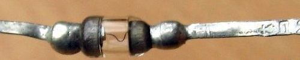
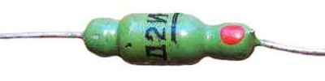
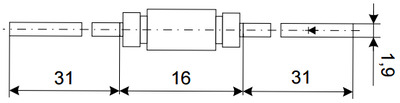
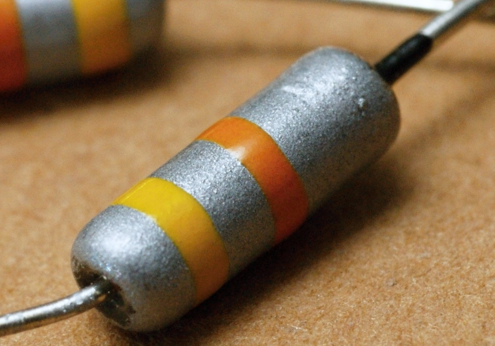
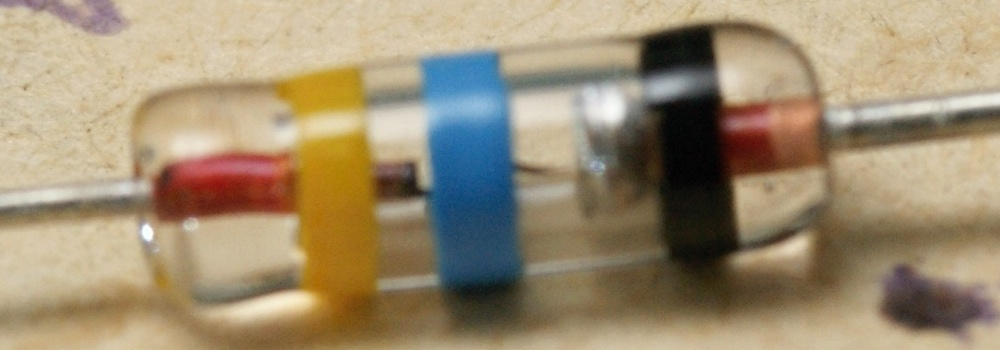
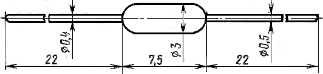

Диод Д2
Диоды Д2 (Д2Б, Д2В, Д2Г, Д2Д, Д2Е, Д2Ж, Д2И) - германиевые точечные диоды. Основное предназначение - детектирование и преобразование сигналов с частотой до 155 МГц.
Выпускаются диоды Д2 в стеклянном корпусе с гибкими выводами. Со стороны плюсового вывода они промаркированы цветной точкой или полоской в виде кольца.



Рис. 1 - Внешний вид и размеры диодов Д2 металлостеклянном корпусе



Рис. 2 - Внешний вид и размеры диодов Д2 в стеклянном корпусе
Таблица 1
| Диод | Цвет кольцевой полосы | |
|---|---|---|
| со стороны анода | со стороны катода | |
| Д2Б | жёлтый | белый |
| Д2В | жёлтый | оранжевый |
| Д2Г | жёлтый | красный |
| Д2Д | жёлтый | голубой |
| Д2Е | жёлтый | зелёный |
| Д2Ж | жёлтый | чёрный |
| Д2И | жёлтый | серый |
Таблица 2
| Прямое напряжение (постоянное) | 1 В |
| Прямое напряжение (импульсное) | 7 В |
| Постоянное обратное напряжение: | |
| Д2Б | 10 В |
| Д2В | 30 В |
| Д2Г, Д2Д | 50 В |
| Д2Е, Д2И | 100 В |
| Д2Ж | 150 В |
| Средний выпрямленный ток: | |
| Д2Ж | 8 мА |
| Д2Б, Д2Г, Д2Д, Д2Е, Д2И | 16 мА |
| Д2В | 25 мА |
| Рабочая температура | -60...+70°C |